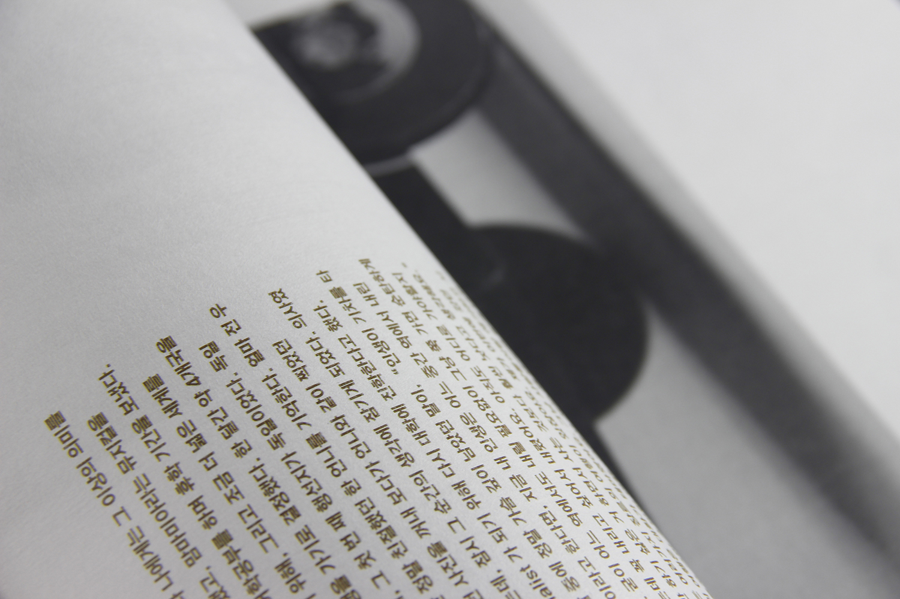
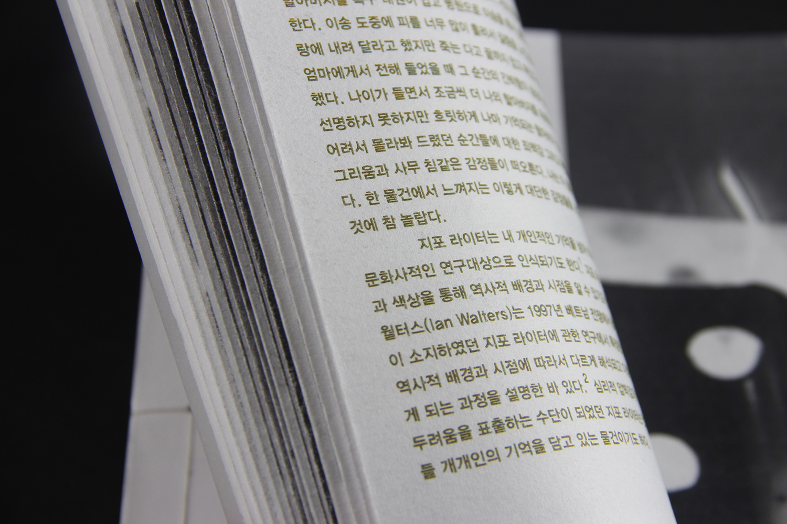
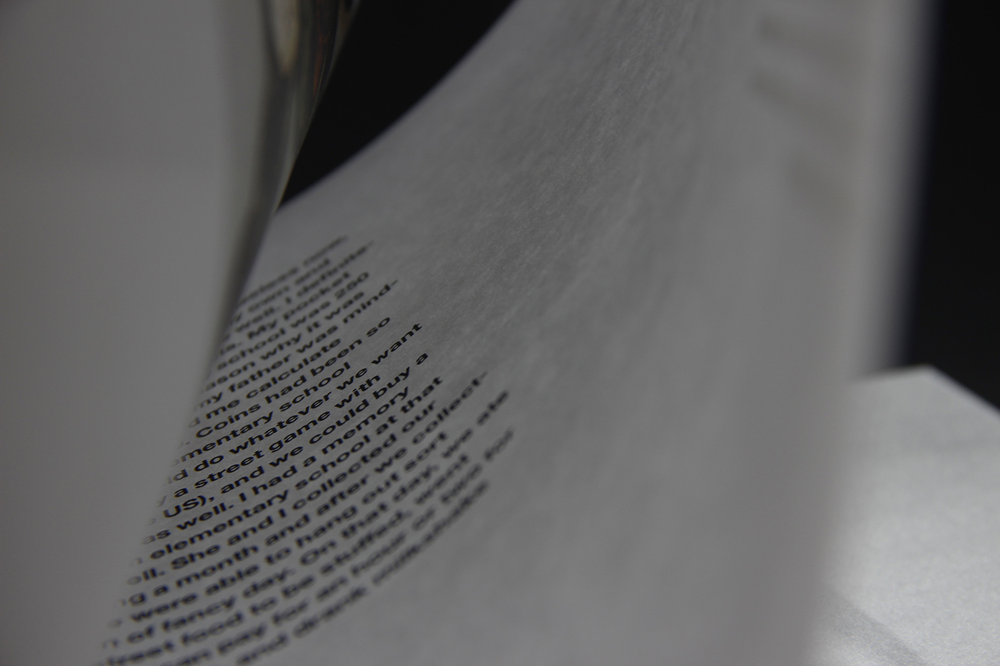
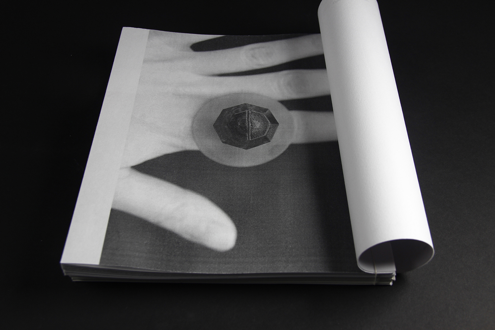
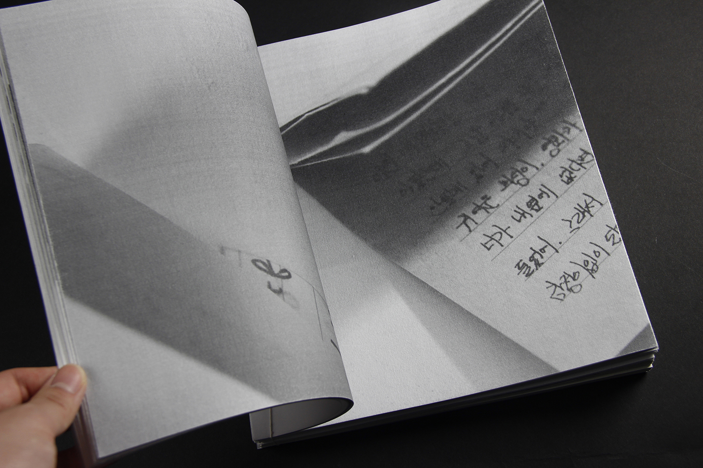
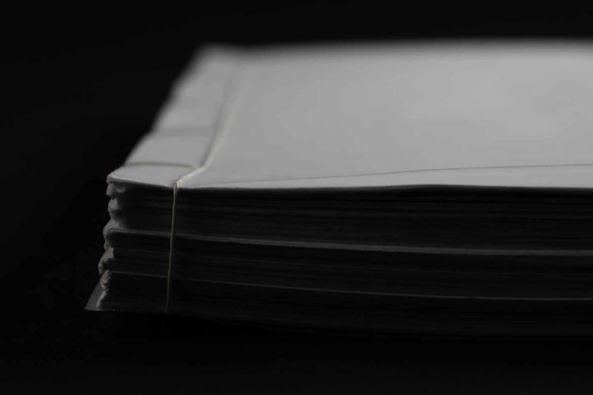
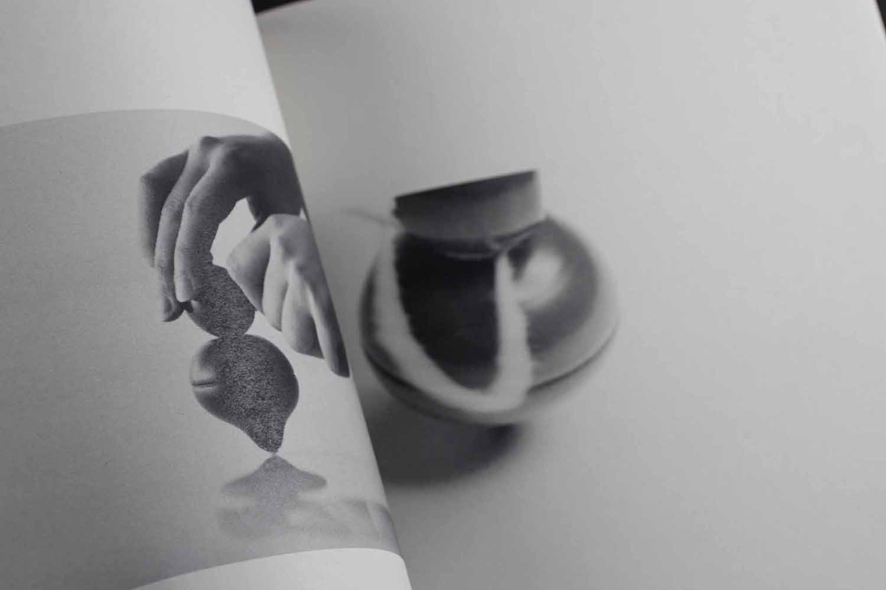
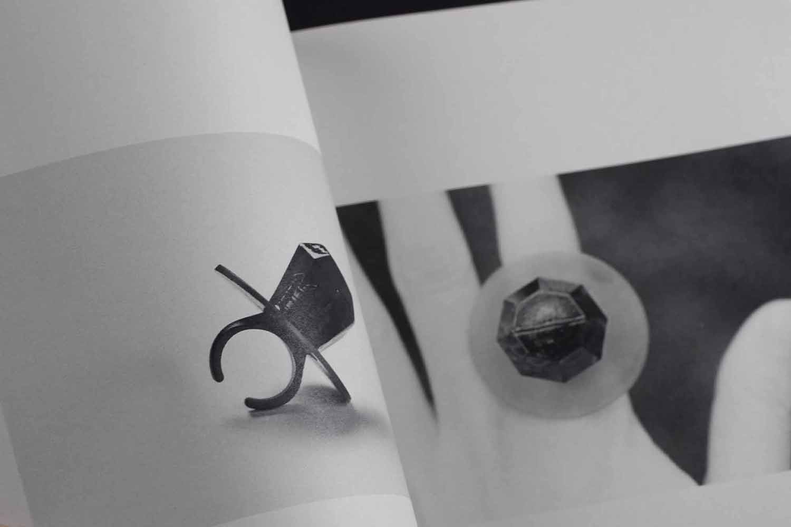
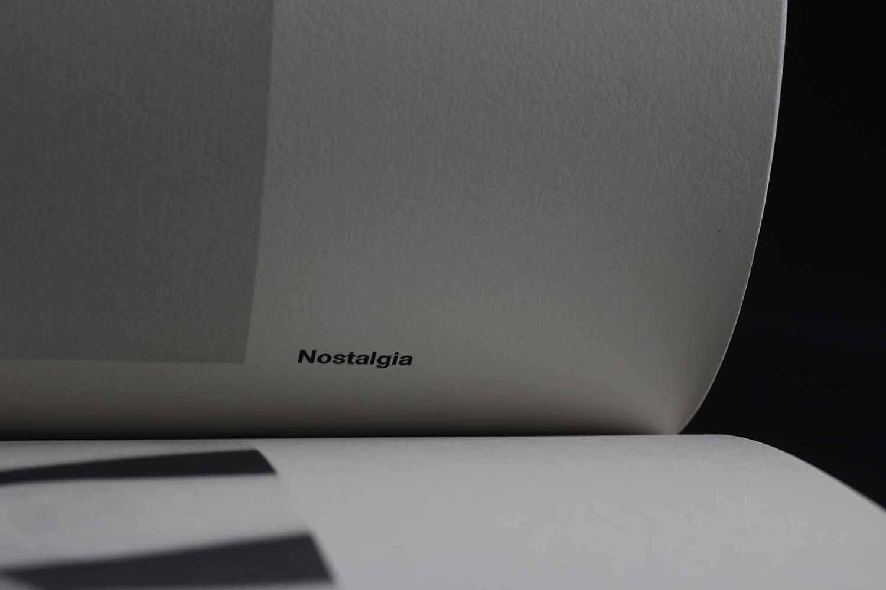
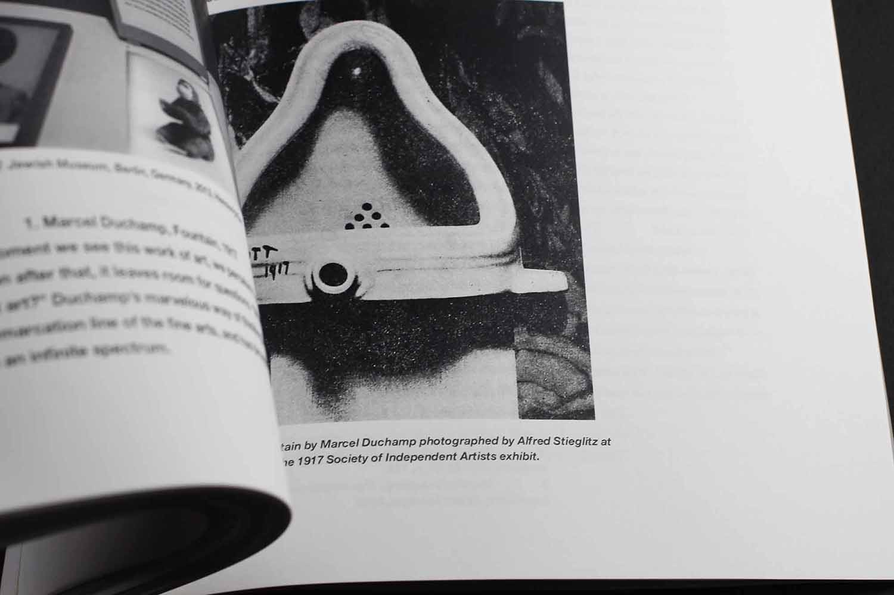

When one opens the publication, the Korean content is revealed first. Yet since most of my audience does not know how to read Korean, the content seems confusing and needs to be decoded.


If one looks inside the folded pages, the English content and more literal photographs are revealed.

This structure provides a paradox: despite its literal photography and English content, without looking inside the folds of the publication, one might never understand the publication’s content — just as truly knowing a person comes from a deeper, less superficial understanding.


Japanese Binding Close Up

A Semiotic study of a single object



Thesis Research Paper
